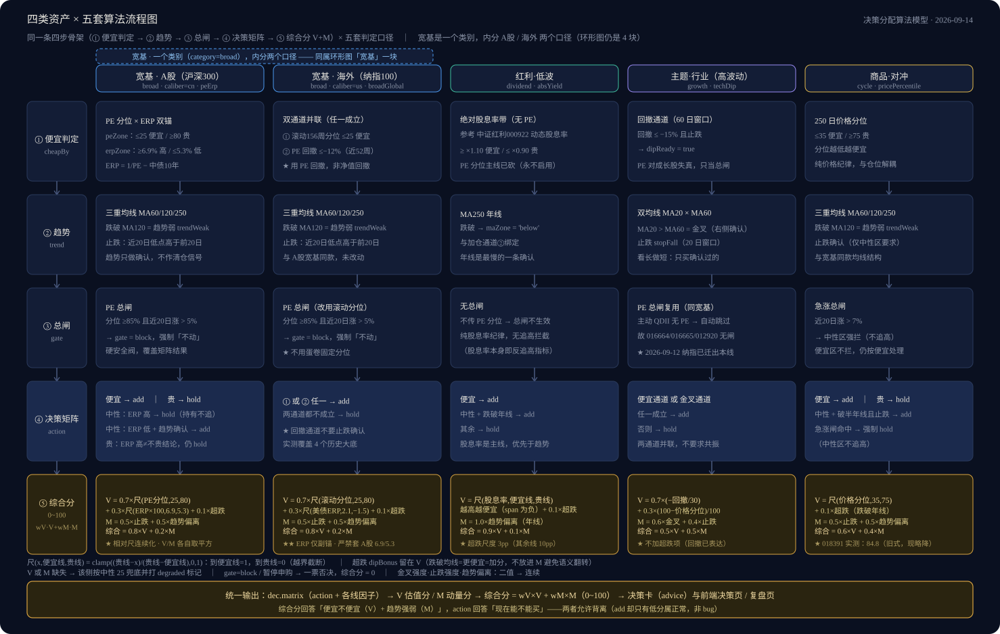
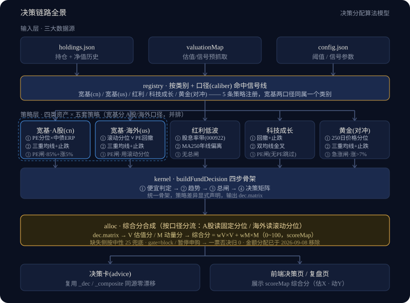

PHAROS · 跑在你自己电脑上
你的基金看板
它只算「现在贵不贵」，不猜明天涨不涨。
灯塔标示方位、提示暗礁，
但它从不替你开船。
不预测涨跌、不替你决定金额，只把「现在贵不贵、能不能加」用可追溯的口径算清楚 —— 数据全部留在本机，不上传、不注册、不联网存储。
零依赖（不需要 npm install）· 免费公开数据源 · 手机可加到主屏当 PWA · MIT 开源
为什么做它
它和手机里的基金 App，有四点不一样
这四条不是营销词，是算法里真的这么写的。
不读你的成本价
综合分只看市场信号，不参考你的买入成本。所以它不会因为你被套住就说「别卖」，也不会因为你浮盈就说「该跑」—— 判断不随仓位漂移。
只给信号，不给金额
看板回答「现在处在什么位置、要不要加」，买多少、什么时候买由你定。引擎从不清仓，只用新钱向目标配置慢慢靠拢。
不预测，只应对
它算的是「估值处在历史什么分位」「距高点回撤多深」「均线在什么位置」——都是现在的事实，不是对未来的预测。
每个结论都能追溯
决策卡写清触发路径与具体数值；复盘页有上周对比；算法阈值来自真实历史回测，不是拍脑袋。
功能 · 概览
今天赚了多少
概览：四张 KPI 一眼看清家底，下面是资产走势与每月投入。
确认「钱到底赚了还是亏了」，以及口径有没有对不上。
- ①「累计投入」= 净投入（扣掉申购费，与券商 App 的「持仓成本」同口径），它是「累计收益」的分母1
- ②卡片副行同时给出「实付（含申购费）」，两者差额即申购费2
- ③三者自洽：累计投入 − 累计收益 = 总资产，对不上就说明某笔记录录错了3
功能 · 决策
现在能不能加
决策：每天一眼看完「哪些能加、哪些别动，以及为什么」。
决定今天要不要出手、看哪几只。
- ①徽章先看硬约束：暂停申购 / PE 总闸拦截会直接把综合分打成 0，不是打折1
- ②综合分 0~100 = 估值分 V（便宜度）+ 动量分 M（趋势强度），「估X · 动Y」让你看清分数从哪来2
- ③这里只回答「能不能加」—— 买多少、什么时候买，看板不给建议3
功能 · 持仓
记一笔买入
持仓：记账的地方，重点在「输错也不会算错」。
补一笔买入记录，并确认份额算得对。
| 基金 | 今日 | 持仓 | 累计收益 | 日限 |
|---|---|---|---|---|
| 某宽基指数联接基金（示意） | +0.31% | ¥12,450 | -2.10% | ¥100 |
| 某红利低波联接基金（示意） | -0.12% | ¥8,120 | -1.85% | — |
| 某黄金 ETF 联接基金（示意） | +0.88% | ¥6,380 | +0.42% | — |
| 某空仓跟踪的基金（示意） | — | ¥0 | — | — |
- ①「记一笔买入」会实时预览成交净值与份额，并分 15:00 前 / 后两档；非交易日显示顺延后的日期1
- ②在途份额在净值公布后自动补填（QDII 走 T+2），不用你手算2
- ③编辑口径：改日期或时段会自动重算；只改金额/备注则不动数值 —— 保护你从券商抄来的真实值3
功能 · 配置
组合长什么样
配置：你的钱分布在哪儿，以及底层到底买了什么。
看结构是否偏了，以及某条赛道是不是悄悄超配了。
- ①环形图按策略线分块（宽基 / 红利·低波 / 主题·行业 / 商品·对冲 / 债券 / 现金），显示当前实际占比；类别可以自己增删1
- ②穿透分析：把成长基金的季报「前十大持仓」摊开成旭日图，看到赛道层面的真实暴露2
- ③页面常驻「披露覆盖 X%」—— 如实告诉你哪些没被穿透到，不把已披露部分说成全部3
功能 · 复盘
当时为什么这么判
复盘：把「当时为什么这么判」完整留档，还能和上一周对比。
回头看自己的判断，或者复盘一次「我当时为什么加了 / 没加」。
| 维度 | 值 | 状态 | 上周 |
|---|---|---|---|
| 股息率锚 | 中性 | ↔ 上周 中性 | |
| 股息率 | 5.10% | — | |
| MA250 | 年线下方 | ↔ 上周 年线下方 |
结论：加仓 · 股息率 5.10% 中性、距便宜线还差 0.42pp，但净值已跌破 250 日线，趋势确认通道加仓 ↔ 上周 不动
- ①每只基金拆成「信号理由 / 原始数据 / 估值信号表 / 结论」四段，可展开逐条看1
- ②信号表自带「上周」列，结论区标出「变化」—— 能看出判断是在什么时候转向的2
- ③综合分是 0 的时候会说明来源：「PE 总闸拦截」「暂停申购」还是「部分维度数据缺失」3
功能 · 设置
连上你的电脑
设置：只有两件事 —— 后端地址与 API Key。
让手机也能连上你电脑上的这份看板。
- ①电脑上自己用：地址留空即可（同源）。手机上必须填电脑的局域网地址1
- ②API Key 默认填
dev；填错会「能看不能存」—— 所有写操作返回 4012 - ③Key 只存在你自己的浏览器里，读数据不需要它3
算法
不同的资产，用不同的尺子
「贵不贵」对红利、成长、黄金不是一回事。拿一套 PE 打天下，只会得到一个看着正常的错结论 —— 所以这里按资产类别换尺子，每套阈值都来自真实历史回测。
| 资产类别 | 用什么尺子量「贵不贵」 | 数据来自 |
|---|---|---|
| A 股宽基 | 该指数自己的 PE 分位 × 中债 10 年 ERP（股债利差） | 乐咕指数估值 + 东财国债收益率 |
| 海外宽基 | 滚动 156 周 PE 分位 ∨ PE 回撤，× 美债 10 年 | 蛋卷 PE 历史序列 + 东财美债收益率 |
| 红利 · 低波 | 绝对股息率带（相对中证红利 000922 动态参考） — 仅适用 A 股红利 | 蛋卷股息率 |
| 主题 · 行业 | 只看基金自身净值：深度回撤 + 止跌确认 + 双均线位置 — 不看行业、也不需要指数 | 东财历史净值 |
| 商品 · 对冲 | 自身净值的 250 日价格分位 + 三重均线位置 — 不绑黄金这一种标的 | 东财历史净值 |
| 债券 / 现金 | ⏳ 待建设：能记录、能算市值与占比，但暂不给买卖结论（而不是给一个假结论） | — |


开始使用
三步，都在这台电脑上
-
装 Node.js 18 或更高
到 nodejs.org 下 LTS 版即可。装完开个终端敲node -v，能看到版本号就对了。 -
双击
setup.bat
从模板生成 3 个数据文件。已存在会跳过，绝不覆盖你的数据，可以放心重复双击。（macOS / Linux 跑npm run setup） -
双击
start.bat
服务起来后浏览器打开http://localhost:3000。窗口里还会打印手机可用的局域网地址。（其他平台npm start）
第 2 步不能跳：看板启动时会直接读取数据文件，读不到就会报错、页面打不开 —— 它不会自动帮你建。
之后升级只需一条命令：git pull。你的数据全在本地 data/ 下、不在 git 管理范围内，升级不会碰它；万一某次更新改了数据结构，程序会在启动时自动处理，处理前先自动备份一份 *.bak-时间戳 —— 你什么都不用做，也不需要会备份。
没有在线 Demo，也不会有 —— 这是纯本地应用，不提供云端服务。请 clone 到自己电脑上跑。
数据与隐私
你的账，只在你自己的机器上
没有上传逻辑
持仓、买入记录、每日快照全部写在项目里的 data/ 目录，本项目不含任何联网上传代码。
你的数据不会进 git
data/state、data/series、config.json、categories.json 与缓存都已写进 .gitignore —— fork 之后也不怕误提交。
写接口要口令，读不要
保存、记买入、改配置等写操作需带 API Key（默认 dev），防局域网内其他设备改你的数据；读数据不需要。Key 只存在你自己浏览器的 localStorage 里。
要备份的只有一个目录
data/state/ 是唯一「丢了找不回」的目录（其余都能重建或重新累积）。定期复制它就够了。
数据来源与已知局限
先说清楚它算不准的地方
数据全部来自第三方公开接口，不需要登录。抓不到时它会降级显示缺失或用兜底值，不会伪造数据，也不会崩。
- 净值 / 历史净值东方财富基金历史净值接口（公开，无需登录）
- 无风险利率东方财富国债收益率：同一次请求返回中债 10 年与美债 10 年。A 股口径只用中债、海外口径只用美债，两者不互为兜底（中美利差倒挂，混用会失真）
- 指数 PE 历史序列蛋卷，约 10 年周频 —— 用于自算滚动分位与 PE 回撤（仅海外宽基）
- 指数 PE 当期分位蛋卷免登录接口（主源）→ 乐咕（A 股兜底）→ 本机常量兜底
- 前十大持仓东方财富基金档案（季报披露，服务端缓存 1 天）
- A 股盘中估算新浪指数实时。QDII 没有盘中估值，看板标「海外休市」，以最新官方净值计
穿透只到「前十大持仓」
季报只披露前十大，覆盖不到基金全部底层资产。页面上常驻「披露覆盖 X%」，赛道图展示的只是已披露部分的内部分布 —— 不把已披露说成全部。
第三方接口会变、会限流
数据源是公开接口，可能变更或限流。抓不到时看板降级显示（缺失或用兜底值），既不会伪造数据，也不会白屏。
它只算现在，不保证未来
所有指标都是对公开历史数据的机械计算，不预测顶底、不保证收益。阈值来自历史回测，而历史不等于未来。
常见问题
上手之前，多半会卡在这几处
页面打不开 / 一打开就报错？
setup.bat，macOS / Linux 跑 npm run setup）。看板启动时会直接读取那几个文件，读不到就报错，它不会自动帮你建。能看到数据，但存不进去？
dev）。填错的表现是「页面能看、所有写操作 401」。注意要先接入你的后端（电脑上自己用留空地址即可）。手机连不上？
有在线 Demo 吗？
升级会不会冲掉我的数据？
data/ 下，不在 git 管理范围内。若某次更新改了数据结构，程序会在启动时自动处理，处理前先备份一份 *.bak-时间戳。仓库里的两个 index.html 有什么区别？
public/index.html 才是应用本体外壳，由本地服务提供（给已经在用的人用）。后端只托管 public/，所以这一页不会被本地服务接管。